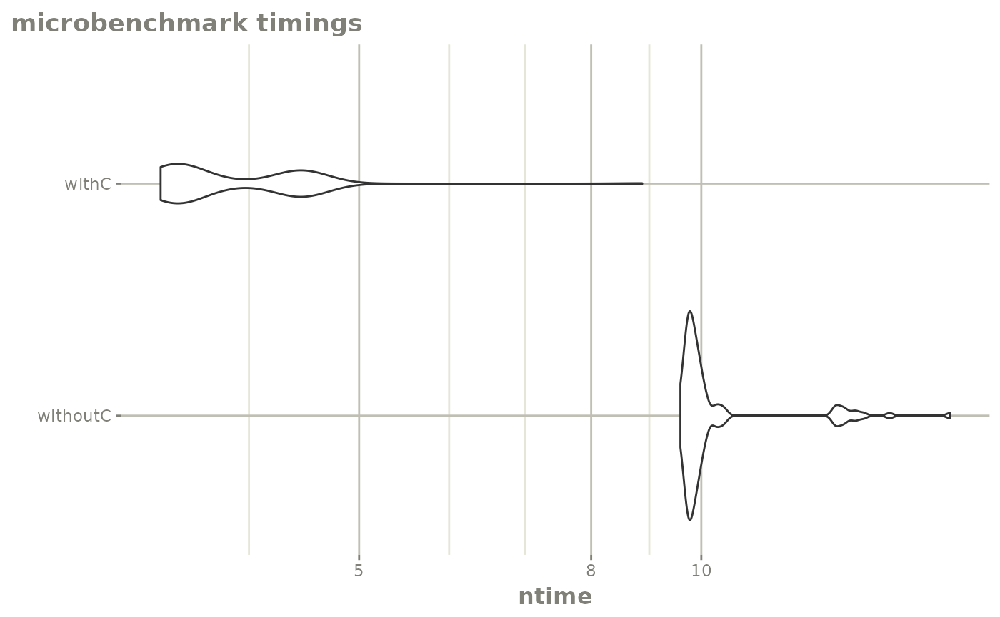

Integrating User Defined Functions into rxode2
Source:vignettes/articles/Integrating-User-Defined-Functions-into-rxode2.Rmd
Integrating-User-Defined-Functions-into-rxode2.RmdUser Defined Functions
library(rxode2)
#> rxode2 2.1.0 using 2 threads (see ?getRxThreads)
#> no cache: create with `rxCreateCache()`When defining models you may have wished to write a small R function
or make a function integrate into rxode2 somehow. This
article discusses 2 ways to do this:
A R-based user function which can be loaded as a simple function or in certain circumstances translated to C to run more efficiently
A C function that you define and integrate into code
R based user functions
A R-based user function is the most convenient to include in the ODE,
but is slower than what you could have done if it was written in
C , C++ or some other compiled language. This
was requested in
github with an appropriate example; However, I will use a very
simple example here to simply illustrate the concepts.
newAbs <- function(x) {
if (x < 0) {
-x
} else {
x
}
}
f <- rxode2({
a <- newAbs(time)
})
#> using C compiler: ‘gcc (Ubuntu 11.4.0-1ubuntu1~22.04) 11.4.0’
e <- et(-10, 10, length.out=40)Now that the ODE has been compiled the R functions will be called while solving the ODE. Since this is calling R, this forces the parallization to be turned off since R is single-threaded. It also takes more time to solve since it is shuttling back and forth between R and C. Lets see how this very simple function performs:
mb1 <- microbenchmark::microbenchmark(withoutC=suppressWarnings(rxSolve(f,e)))
library(ggplot2)
autoplot(mb1) + rxTheme()
Not terribly bad, even though it is shuffling between R and C.
You can make it a better by converting the functions to C:
# Create C functions automatically with `rxFun()`
rxFun(newAbs)
#> → finding duplicate expressions in d(newAbs)/d(x)...
#> [====|====|====|====|====|====|====|====|====|====] 0:00:00
#> → optimizing duplicate expressions in d(newAbs)/d(x)...
#> [====|====|====|====|====|====|====|====|====|====] 0:00:00
#> converted R function 'newAbs' to C (will now use in rxode2)
#> converted R function 'rx_newAbs_d_x' to C (will now use in rxode2)
#> Added derivative table for 'newAbs'
# Recompile to use the C functions
# Note it would recompile anyway if you didn't do this step,
# it just makes sure that it doesn't recompile every step in
# the benchmark
f <- rxode2({
a <- newAbs(time)
})
#> using C compiler: ‘gcc (Ubuntu 11.4.0-1ubuntu1~22.04) 11.4.0’
mb2 <- microbenchmark::microbenchmark(withC=rxSolve(f,e, cores=1))
mb <- rbind(mb1, mb2)
autoplot(mb) + rxTheme() + xgxr::xgx_scale_y_log10()
#> Scale for y is already present.
#> Adding another scale for y, which will replace the existing scale.
print(mb)
#> Unit: milliseconds
#> expr min lq mean median uq max neval
#> withoutC 7.622984 7.718066 8.437513 7.789228 8.035908 13.243593 100
#> withC 2.054160 2.112945 2.452886 2.199797 2.743942 6.742061 100The C version is almost twice as fast as the R version. You may have
noticed the conversion also created C versions of the first derivative.
This is done automatically and gives not just C versions of function,
but C versions of the derivatives and registers them with
rxode2. This allows the C versions to work with not only
rxode2 but nlmixr2 models.
This function was setup in advance to allow this type of conversion.
In general the derivatives will be calculated if there is not a
return() statement in the user defined function. This means
simply let R return the last value instead of explictly calling out the
return(). Many people prefer this method of coding.
Even if there is a return function, the function could
be converted to C. In the github issue, they used a
function that would not convert the derivatives:
# Light
f_R <- function(actRad, k_0, a_k) {
photfac <- a_k * actRad + k_0
if (photfac > 1) {
photfac = 1
}
return(photfac)
}
rxFun(f_R)
#> function contains return statement; derivatives not calculated
#> converted R function 'f_R' to C (will now use in rxode2)While this is still helpful because some functions have early
returns, the nlmixr2 models requiring derivatives would be
calculated be non-optimized finite differences when this occurs. While
this gets into the internals of rxode2 and
nlmixr2 you can see this more easily when calculating the
derivatives:
rxFromSE("Derivative(f_R(actRad, k_0, a_k),k_0)")
#> [1] "(f_R(actRad,(k_0)+6.05545445239334e-06,a_k)-f_R(actRad,k_0,a_k))/6.05545445239334e-06"Whereas the originally defined function newAbs() would
use the new derivatives calculated as well:
rxFromSE("Derivative(newAbs(x),x)")
#> [1] "rx_newAbs_d_x(x)"In some circumstances, the conversion to C is not possible, though you can still use the R function.
There are some requirements for R functions to be integrated into the rxode2 system:
The function must have a set number of arguments, variable arguments like
f(…)are currently not allowed.The function is given each argument as a single number, and the function should return a single number
If these requirements are met you can use the R function in rxode2. Additional requirements for conversion to C include:
-
Any functions that you use within the R function must be understood and available to
rxode2.- Practically speaking if you have
fun2()which refers tofun1(),fun1()must be changed to C code and available torxode2before changing the functionfun2()to C.
- Practically speaking if you have
The functions can include
if/elseassignments or simple return statements (either by returning a value or having that value on a line by itself). Special R control structures and functions (likeforandlapply) cannot be present.The function cannot refer to any package functions
As mentioned, if the
return()statement is present, the derivative C functions andrxode2’s derivative table is not updated.
C based functions
You can add your own C functions directly into rxode2 as well using
rxFun():
fun <- "
double fun(double a, double b, double c) {
return a*a+b*a+c;
}
" ## C-code for function
rxFun("fun", c("a", "b", "c"), fun)If you wanted you could also use C functions or expressions for the
derivatives by using the rxD() function:
rxD("fun", list(
function(a, b, c) { # derivative of arg1: a
paste0("2*", a, "+", b)
},
function(a, b, c) { # derivative of arg2: b
return(a)
},
function(a, b, c) { # derivative of arg3: c
return("0.0")
}
))Removing the function with rxRmFun() will also remove
the derivative table:
rxRmFun("fun")